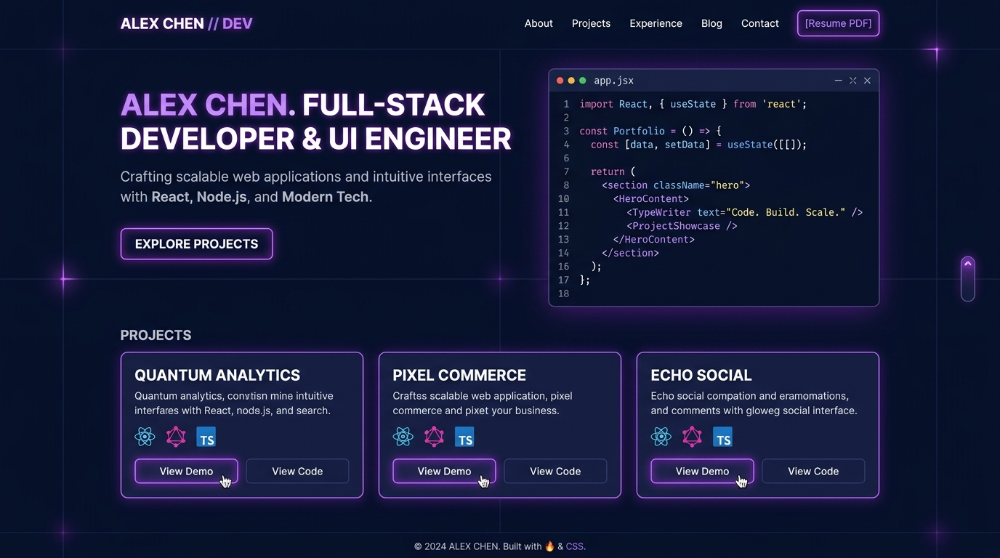
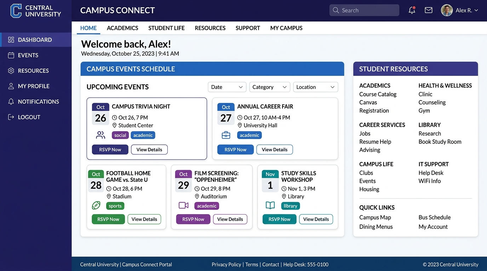
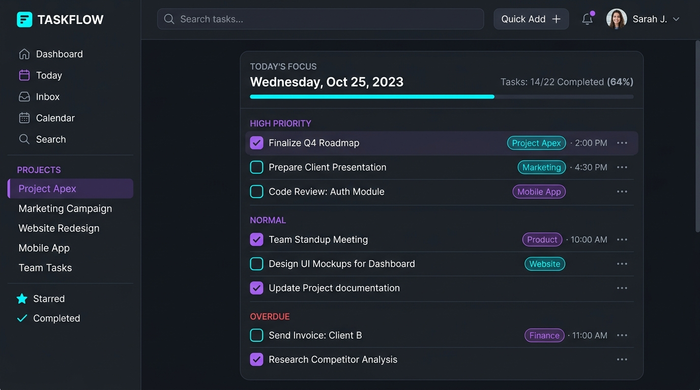
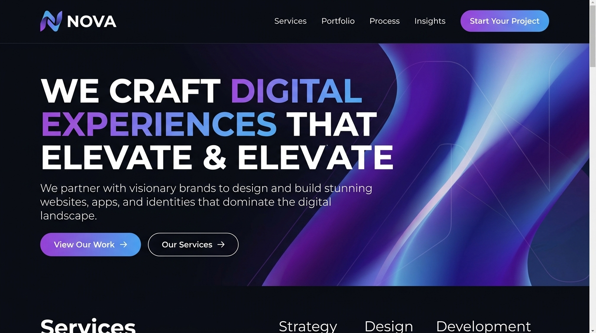

Web Development
Available for Opportunities
Hi, I'm LIYAVURAHUMAN
I am an
Aspiring Web Developer
I am an aspiring web developer passionate about creating modern, responsive, and user-friendly websites. I enjoy learning new technologies and developing creative digital solutions.
Web Dev
WordPress
Frontend
Introduction
About Me
Problem Solving
Analyzing requirements to craft elegant, efficient, and user-centric digital experiences.
Clean Code Standard
Writing semantic, maintainable, and standard-compliant HTML, CSS, and JavaScript.
Continuous Learning
Actively exploring modern web technologies, best practices, and innovative workflows.
Dedicated to Crafting Exceptional Digital Experiences
Hello! I'm LIYAVURAHUMAN, an aspiring Junior Web Developer and WordPress Developer based in Sri Lanka. My journey into web development began with a deep curiosity about how websites operate behind the scenes, which rapidly evolved into a strong dedication to designing responsive, accessible, and high-performance web solutions.
I enjoy translating creative design ideas into functional code that looks and functions seamlessly across all devices—from smartphones to large desktop displays. Whether developing custom landing pages with pure HTML/CSS/JavaScript or building flexible websites on WordPress, I focus on clean structure, modern aesthetics, and intuitive user experiences.
Career Goal
"To build professional websites, improve my development skills, and find opportunities in the IT and web development industry where I can contribute to meaningful projects and grow as a software engineer."
Role:
Junior Web Developer
CMS Focus:
WordPress Customization
Email:
liyavurrahuman.dev@gmail.com
Status:
Open to Opportunities
Competencies
Technical & Professional Skills
An honest reflection of my technical toolkit, core competencies, and software proficiencies.
HTML5
ProficientSemantic document structuring, modern HTML5 APIs, accessibility (ARIA), SEO meta markup.
CSS3
ProficientFlexbox, CSS Grid, custom properties (CSS variables), keyframe animations, glassmorphism.
JavaScript
IntermediateVanilla JS, DOM manipulation, event listeners, localStorage, ES6 syntax, asynchronous fetch.
WordPress
IntermediateTheme installation & customization, plugin configuration, block editors, website maintenance.
Responsive Design
ProficientMobile-first methodologies, media queries, fluid sizing, cross-browser responsiveness.
Python Basics
FoundationalFundamental programming concepts, data structures (lists, dicts), conditionals, and functions.
Microsoft Word
ProficientTechnical documentation, report formatting, structured typography, template creation.
Microsoft Excel
IntermediateData organization, spreadsheet formulas, basic chart creation, data analysis summaries.
Communication
ProficientClear verbal and written communication, active listening, collaborative team mindset.
Portfolio
Featured Projects
Explore a selection of my web development projects and practical applications.

Web Portal
JavaScript App
WordPress
Background
Education & Qualifications
My academic foundation and educational milestones.
Bachelor of Information Technology (BIT External Degree)
Studying core computing disciplines, software development fundamentals, database management, web systems, and problem-solving methodologies through the external degree program.
Diploma in English
Completed comprehensive coursework in English language proficiency, professional business communication, presentation delivery, and written documentation.
GCE Advanced Level (A/L)
Completed secondary school studies under the national curriculum, building analytical capabilities, discipline, and foundational academic preparation.
GCE Ordinary Level (O/L)
Successfully completed foundational secondary education across core academic subjects including Mathematics, Science, and English.
Let's Connect
Get In Touch
Have a question, project proposal, or opportunity? Feel free to reach out to me!
Email Me
liyavurrahuman.dev@gmail.com
GitHub
github.com/Liyavurrahuman
LinkedIn
linkedin.com/in/liyavurrahuman
Front-End Notice: This website is client-side only. To deliver messages directly to your inbox without a custom server, connect this form's action attribute to a free service like Formspree, Web3Forms, or EmailJS.